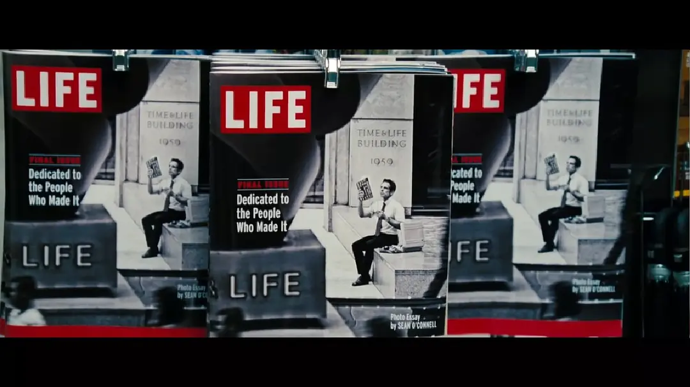

HuaiHaiChao
主页
微波狂澜
影像记忆
阅读更多
影像记忆
猫的报恩
如果有一天你被邀请成为猫王国的王子妃，作为人类的一切烦恼都会被丢掉。你会同意吗？
怦然之动，是心动，抑或只是风动？
风行过万里，月沉没海底，怦然之间，遇见的，是否还是你……
你的旅程何时启程都不晚
一个爱做白日梦的小人物，因为一个偶然的事件，他从平凡的生活出走，短暂地踏上梦寐以求的冒险之旅。

在“输掉”中赢得属于自己的人生
一切都来得及，记得爱自己。
风柜来的人
潮岸不知伸向何方。谁又不是，其去未知呢……
就在江湖之上，放下江湖
“客官，你去哪儿啊？”
“去哪儿啊，我想想。小舟从此逝，江海寄余生，倒也是个不错的结局……”
从沉重的生活中拾起轻盈
一无所有却渴望幸福的人们，为了他们送上即使平凡却最特别的慰藉。
土拨鼠之日
电影里的菲尔可以在“暂停”中慢慢寻找，而现实里，几十年也是匆匆一瞬，你是否会给自己一个机会？
美丽人生
生命是美好的，哪怕一时被黑暗笼罩，我们依然能够找到美之所在。
拯救正义，救赎恐惧
以命换命，是疯狂？还是救赎？所谓“拯救”，是无所畏惧，还是一无所有……
关不住的飞翔鸟
恐惧让你沦为囚犯，希望让你重获自由。
繁星之下——《爱乐之城》
我们歌唱爱情，也终将独自远行……
一部充满魅力与幽默的视觉盛宴
你看,仍有微弱的文明曙光这野蛮的屠宰场,曾经被称为人类。
热烈
或许每个人的青春里，都有阵风，叫做梦想。它不疾不徐，却吹过青春的每一个角落。
嗨，久别重逢的芭比
芭比拥有无限可能，女性也拥有无限可能。